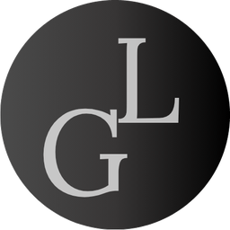

Gabriel Tavares Lorena
Consultor de Implantação ERP
Atuo na implantação de sistemas ERP, principalmente nos módulos Financeiro e Faturamento.
Escuto a operação de cada cliente, transformo o que ela precisa em configurações no sistema,
acompanho testes e validações até a entrada em produção e oriento os usuários nos novos processos.
Minha base está no faturamento de serviços, e hoje combino essa visão de processos com
HTML, CSS, JavaScript, SQL e Python.
Interesses
Consultoria ERP
Implantação de sistemas
Análise de sistemas
Processos
Tecnologia
Gestão de projetos
Grupo HK
Consultor, São Paulo
mai 2025 – atual
- Consultoria e implantação de ERP junto aos clientes, da análise de necessidades até a entrada em produção.
- Parametrização e configuração dos módulos Financeiro e Faturamento, incluindo processos de custos e vendas.
- Testes, validações e treinamento dos usuários nos processos implantados.
- Análise de solicitações e inconsistências, com direcionamento das demandas para Desenvolvimento e Suporte.
Experiências anteriores
Seal Segurança e Serviços, Evolutime e Polimetri Indústria Metalúrgica, 2020 a 2025
Ver tudo
Ocultar
Seal Segurança e Serviços
Assistente de Faturamento Pleno, Mauá
out 2021 – fev 2025
- Aferição e emissão de notas fiscais de prestação de serviço.
- Conferência dos valores recebidos e resolução de divergências com os clientes.
- Apoio ao contas a receber na apuração dos pagamentos.
- Controle e envio de documentação trabalhista aos clientes.
Evolutime
Assistente Pedagógico, fev – out 2021
Controle de planilhas de frequência, agendamento de clientes para resolver pendências estudantis e financeiras, emissão de certificados e listas de chamada.
Polimetri Indústria Metalúrgica
Aprendiz de faturamento, fev 2020 – fev 2021
Primeiro contato com o TOTVS no módulo de faturamento, emissão de DANFEs e baixa de canhotos fiscais.
ERP e processos
TOTVS
SAR2G
Financeiro
Faturamento
Custos e vendas
Parametrização
Formação
FATEC Mauá
2021 – 2024
Tecnologia em Informática para Negócios
ETEC, Escola Técnica Estadual de São Paulo
2018 – 2019
Técnico em Tecnologia da Informação e Sistemas de Informação
Alura
400h+
Mais de 400 horas de cursos
Certificações
- Scrum Foundation Learner
- Kanban: evolua suas entregas com métricas
- Começando em Programação: carreira e primeiros passos
- HTML e CSS: classes, posicionamento e Flexbox
- HTML e CSS: trabalhando com responsividade e publicação de projetos
Métodos
Scrum
Kanban
Product Discovery
Gestão ágil de projetos
Consultoria
Treinamento